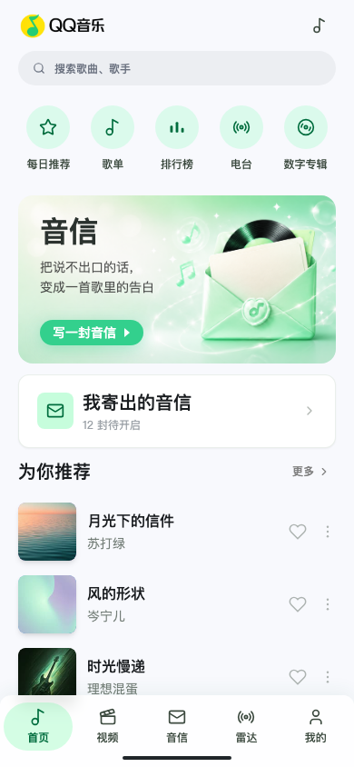
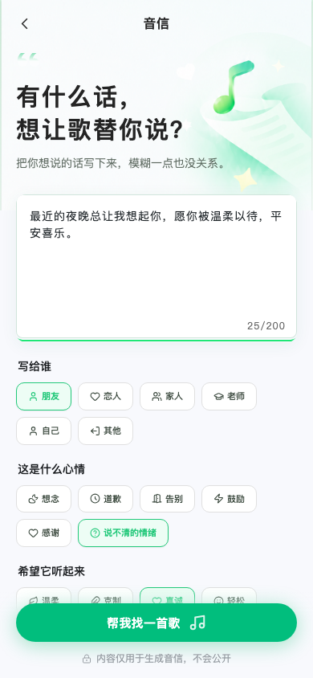
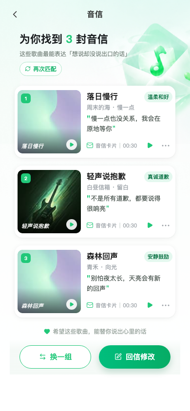
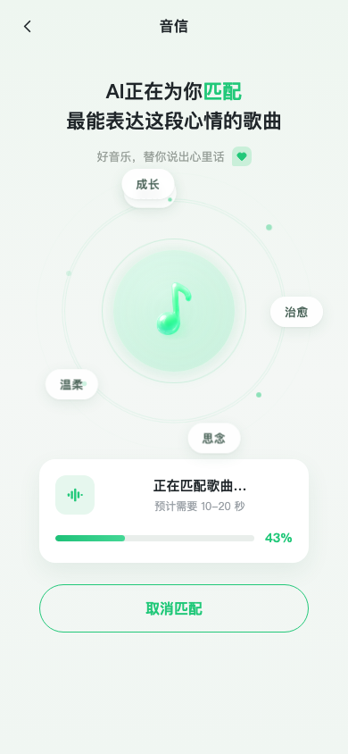
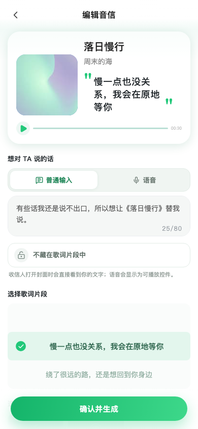
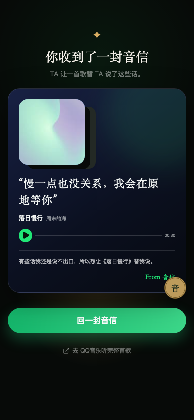
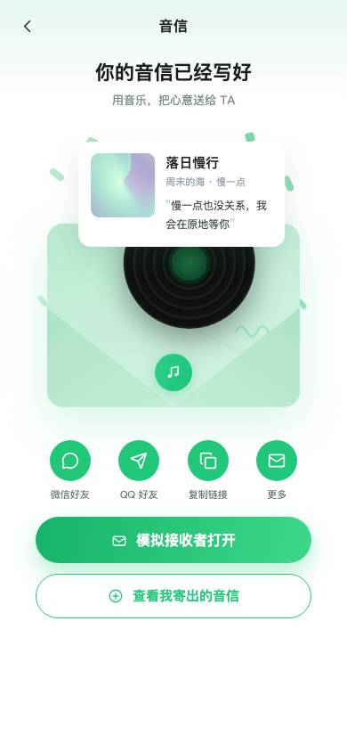
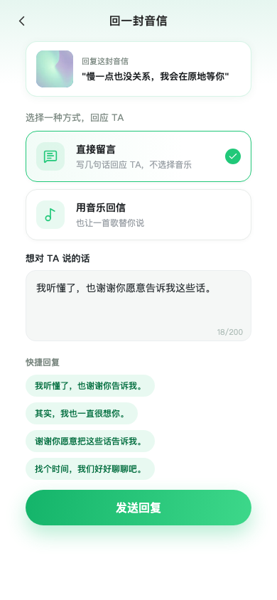
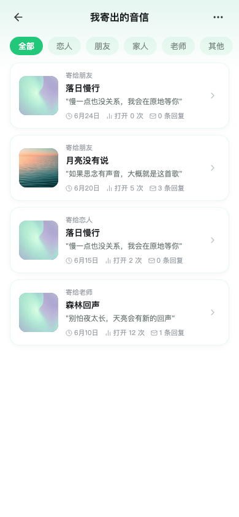

你是否也有过这样的时刻
音信 Demo
产品出现
音信 是 QQ 音乐中的音乐表达功能
它不只是分享一首歌，而是把难以直接表达的情绪，转化成一封音乐信件。

音信入口
发送端
留下此刻想表达的内容
输入一句话，一段情绪，或一段语音
选择想要送达的对象
描述当下的心情与语气
无需提前确定歌曲或歌词

创作音信
AI 生成
从情绪到歌词
匹配最适合承载心意的作品
音信会生成一首歌、一句关键歌词，以及最适合播放的音乐片段。

候选音信

新功能重点
是否藏在歌词里
表达可以直接抵达，也可以缓缓显现
直接展示
接收者打开音信后，可以直接看到文字，或听到语音。
藏在歌词里
内容被放进歌词语境，随歌曲播放逐渐被发现。

隐藏表达
接收端
收到一封音信
不再只是一次普通的歌曲分享
封面、歌词、关键片段与隐藏其中的表达，共同构成一封完整的音乐信件。

收到音信

关系延续
回复与总结
让说不出口的话，成为一首歌里的心意
回应可以是一段文字，也可以是另一首歌。音乐成为人与人之间传递情绪、建立连接的一种语言。

回一封音信

音
音信 Demo